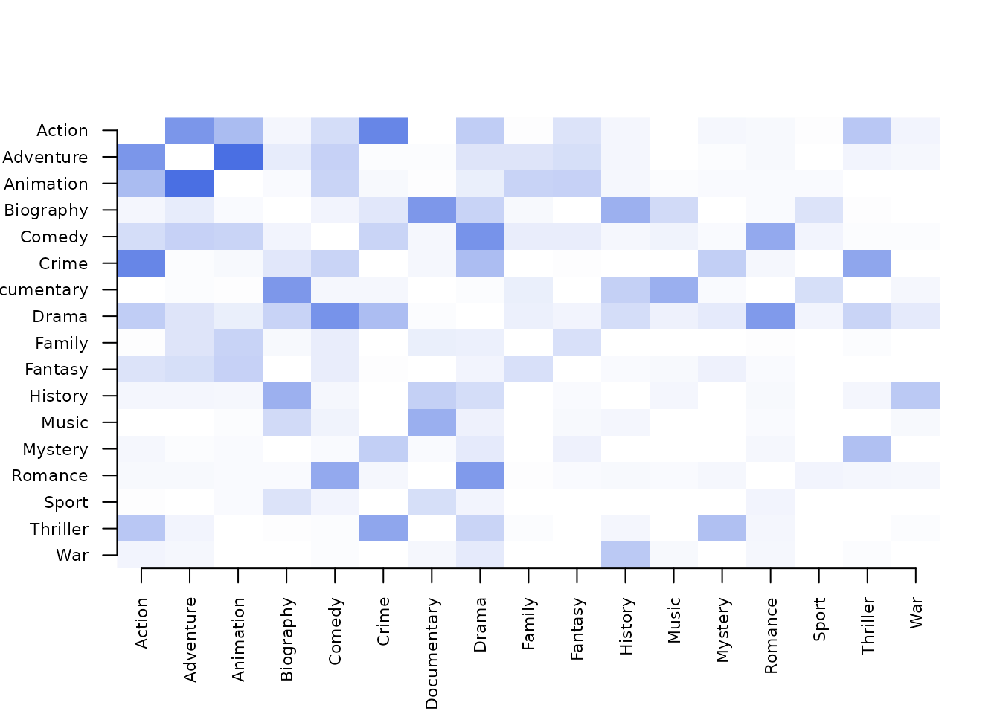
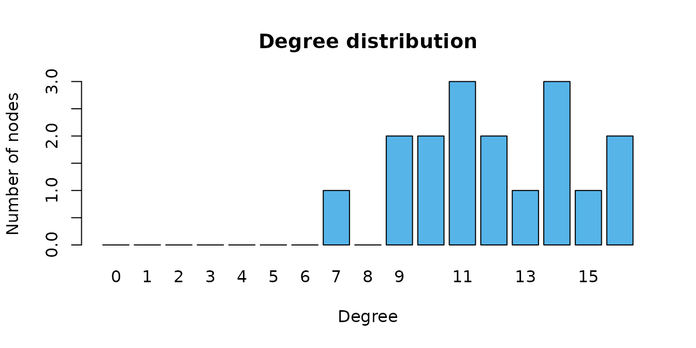

Co-occurrence networks
Written by Mohammed Saqr and Sonsoles López-Pernas
Source:vignettes/cooccure.Rmd
cooccure.RmdMany data sets record which things appear together: the keywords of an article, the genres of a film, the members of a team, the codes applied to an interview passage, or the activities of a learning session. A co-occurrence network turns such records into relations. Each distinct item becomes a node, and two items are linked when they appear in the same record, called a transaction. The weight of a link is, at its simplest, the number of transactions the two items share. The network then shows which items form clusters, which act as bridges between clusters, and which are peripheral.
Raw counts mix two things: how strongly two items are associated and how common each of them is. A frequent item co-occurs with almost every other item because it appears so often. Similarity measures separate the two by comparing the observed co-occurrence with the items’ own frequencies (van Eck & Waltman, 2009), and fractional counting reduces the weight of transactions that contain many items (Perianes-Rodriguez et al., 2016). Co-occurrence analysis is used in bibliometrics, text analysis and learning analytics, where it is one of the standard ways of building networks from records (Saqr et al., 2024).
This vignette builds a genre network from a sample of films with one
call to cooccurrence(), normalizes it, summarizes it, draws
it, splits it by decade, and converts it for other network packages.
Data
movies holds 1,000 films with an IMDb rating of at least
7.0 and at least 1,000 votes, released between 1970 and 2024:
-
Transaction:
tconst, the film; one row per film. -
Items:
genres, the film’s genres in one comma-separated column, such as"Comedy,Drama,History". -
Groups:
decade, the release decade;averageRating, the IMDb rating. -
Other:
primaryTitle,startYear,numVotes.
head(movies)
#> tconst primaryTitle startYear genres
#> 1 tt0118117 The War at Home 1996 Drama
#> 2 tt10534996 Josep 2020 Animation,Biography,Drama
#> 3 tt4686844 The Death of Stalin 2017 Comedy,Drama,History
#> 4 tt0089957 Samaya obayatelnaya i privlekatelnaya 1985 Comedy,Romance
#> 5 tt3469964 Blind Massage 2014 Drama
#> 6 tt7647198 Love and Shukla 2017 Comedy,Drama,Romance
#> decade averageRating numVotes
#> 1 1990s 7.0 2733
#> 2 2020s 7.4 2340
#> 3 2010s 7.3 126237
#> 4 1980s 7.4 2521
#> 5 2010s 7.2 1804
#> 6 2010s 7.2 1234Which genres appear together?
The genres of a film are separated by commas, so field
names the column and sep the separator. Each film is a
transaction, and each pair of its genres gains one unit of weight.
net <- cooccurrence(movies, field = "genres", sep = ",")
print(net, n = 5)
#> # cooccurrence: 22 nodes, 129 edges | density: 0.5584 | mean degree: 11.7273 | 1000 transactions
#> # similarity: none | counting: full
#> # possible edges: 231 | isolates: 0
#> # top nodes: Drama(deg=20,str=812), Comedy(deg=19,str=412), Action(deg=17,str=295), Romance(deg=17,str=237), Adventure(deg=15,str=195)
#> from to weight count
#> Comedy Drama 159 159
#> Drama Romance 131 131
#> Crime Drama 91 91
#> Action Drama 71 71
#> Comedy Romance 63 63
#> # ... 124 more edgesThe header describes the network before any edge is read: 22 genres, 129 of the 231 possible pairs linked (a density of 0.56), and 1,000 films. Drama is linked to 20 of the other 21 genres. The strongest edges are all pairs with Drama or Comedy, the two most common genres: Comedy and Drama share 159 films, Drama and Romance 131. These counts describe volume more than affinity.
Which genres belong together?
The Jaccard similarity divides the number of shared films by the
number of films that carry either genre, so a pair scores high only when
the two genres rarely appear apart. Genres tagged on fewer than 20 films
are dropped with min_occur, since a similarity built on one
or two films is unstable.
jac <- cooccurrence(movies, field = "genres", sep = ",",
similarity = "jaccard", min_occur = 20)
print(jac, n = 8)
#> # cooccurrence: 17 nodes, 102 edges | density: 0.7500 | mean degree: 12.0000 | 998 transactions
#> # similarity: jaccard | counting: full
#> # possible edges: 136 | isolates: 0
#> # top nodes: Drama(deg=16,str=1.153), Comedy(deg=16,str=0.8949), Romance(deg=15,str=0.5377), Action(deg=14,str=1.009), Adventure(deg=14,str=0.8788)
#> from to weight count
#> Adventure Animation 0.285 39
#> Action Crime 0.237 59
#> Comedy Drama 0.211 159
#> Action Adventure 0.208 44
#> Biography Documentary 0.204 44
#> Drama Romance 0.198 131
#> Crime Thriller 0.175 37
#> Comedy Romance 0.168 63
#> # ... 94 more edgesFive rare genres and the two films tagged only with them drop out, leaving 17 genres and 998 films. Under Jaccard, Adventure and Animation become the closest pair (0.285, 39 shared films), followed by Action and Crime (0.237). Comedy and Drama, the largest pair by count, fall to third place (0.211): they share many films, but each also appears in many films without the other. The similarity guide compares all eight measures.
How is the network structured?
summary() computes network-level metrics and the
parameters used.
summary(jac)
#> cooccurrence network
#> ------------------------------
#> Nodes : 17
#> Edges : 102
#> Possible edges : 136
#> Density : 0.7500
#> Mean degree : 12.0000
#> Isolates : 0
#> Transactions : 998
#> Similarity : jaccard
#> Counting : full
#> Weight range : [0.004425, 0.2847]
#> Weight mean : 0.05131
#> Count range : [1, 159]
#> Count mean : 16.05
#> Top nodes : Drama(16, 1.153), Comedy(16, 0.8949), Romance(15, 0.5377), Action(14, 1.009), Adventure(14, 0.8788)Three of every four possible pairs are linked (density 0.75), with a mean degree of 12 out of a possible 16. The weights are small, between 0.004 and 0.285 with a mean of 0.051, so most links are weak and a few carry the structure. The node table gives the same metrics per genre.
head(as.data.frame(jac, what = "nodes"))
#> node degree strength count_strength frequency
#> 1 Drama 16 1.153 796 634
#> 2 Comedy 16 0.895 404 278
#> 3 Romance 15 0.538 234 160
#> 4 Action 14 1.009 285 155
#> 5 Adventure 14 0.879 190 101
#> 6 Animation 14 0.791 147 75Drama and Comedy are linked to every other genre (degree 16), but
Action has nearly the same total Jaccard strength as Drama (1.009
against 1.153) with two fewer links, because its links are stronger. The
frequency column is the number of films carrying each
genre: 634 for Drama against 155 for Action.
What does the network look like?
The heatmap shows the weight matrix: rows and columns are genres, darker cells are stronger links, and white cells are pairs that never co-occur.
plot(jac)
The strongest cells fall in small groups of genres rather than in one dominant row: Adventure, Animation and Action are linked pairwise with weights between 0.133 and 0.285, and Biography, Documentary and History with weights between 0.092 and 0.204. The degree distribution summarizes how evenly the links are spread.
plot(jac, type = "degree")
Every genre has between 7 and 16 links, and 9 of the 17 have 12 or more, so the network is dense and not organized around a single hub; its structure lies in the weights.
Does the network change over time?
split_by builds one network per value of a column, here
one per release decade, and stacks the edge lists with a
group column. The group table compares the networks.
by_decade <- cooccurrence(movies, field = "genres", sep = ",",
split_by = "decade", similarity = "jaccard",
min_occur = 5)
as.data.frame(by_decade, what = "groups")
#> group n_nodes n_edges possible_edges density weight_mean count_sum
#> 1 1970s 12 34 66 0.515 0.1334 136
#> 2 1980s 14 43 91 0.473 0.0977 164
#> 3 1990s 13 39 78 0.500 0.1126 187
#> 4 2000s 16 66 120 0.550 0.0769 335
#> 5 2010s 17 85 136 0.625 0.0666 581
#> 6 2020s 13 39 78 0.500 0.1004 184The 2010s network is the largest (17 genres, 85 edges) and the
densest (0.625), and the 1980s network the sparsest (0.473). The mean
Jaccard weight is highest in the 1970s (0.133), when fewer genres were
in use and the ones that were combined did so more consistently. The guide
on comparing groups covers per-group conversion and
aggregate_by, which pools groups into one network.
How is the network used elsewhere?
The edge list converts to the classes of other network packages. Here
the Jaccard network becomes an igraph graph and the
weighted degree (strength) of each genre is computed there.
g <- as_igraph(jac)
g
#> IGRAPH c594546 UNW- 17 102 --
#> + attr: name (v/c), weight (e/n), count (e/n)
#> + edges from c594546 (vertex names):
#> [1] Adventure --Animation Action --Crime Comedy --Drama
#> [4] Action --Adventure Biography --Documentary Drama --Romance
#> [7] Crime --Thriller Comedy --Romance Documentary--Music
#> [10] Biography --History Action --Animation Crime --Drama
#> [13] Mystery --Thriller Action --Thriller History --War
#> [16] Action --Drama Crime --Mystery Documentary--History
#> [19] Animation --Fantasy Adventure --Comedy Animation --Family
#> [22] Biography --Drama Drama --Thriller Comedy --Crime
#> + ... omitted several edgesThe graph has the 17 genres as vertices and the 102 edges with their
weight and count attributes, so any igraph
function can be applied. The export
guide covers igraph, tidygraph, cograph, Nestimate, matrices and
Gephi files.
Further reading
The guides cover input formats, counting, sequences, windows and event logs and the verification against Nestimate. Two case studies analyze genre co-occurrence and actor collaboration in the IMDb sample.
References
Perianes-Rodriguez, A., Waltman, L., & van Eck, N. J. (2016). Constructing bibliometric networks: A comparison between full and fractional counting. Journal of Informetrics, 10(4), 1178–1195. https://doi.org/10.1016/j.joi.2016.10.006
Saqr, M., López-Pernas, S., Conde, M. Á., & Hernández-García, Á. (2024). Social network analysis: A primer, a guide and a tutorial in R. In M. Saqr & S. López-Pernas (Eds.), Learning analytics methods and tutorials: A practical guide using R. Springer. https://doi.org/10.1007/978-3-031-54464-4_15
van Eck, N. J., & Waltman, L. (2009). How to normalize cooccurrence data? An analysis of some well-known similarity measures. Journal of the American Society for Information Science and Technology, 60(8), 1635–1651. https://doi.org/10.1002/asi.21075